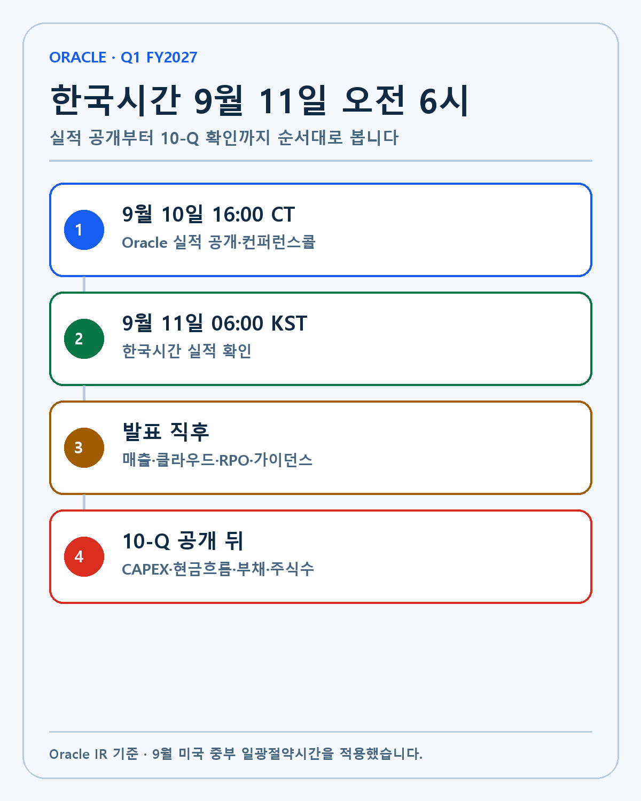
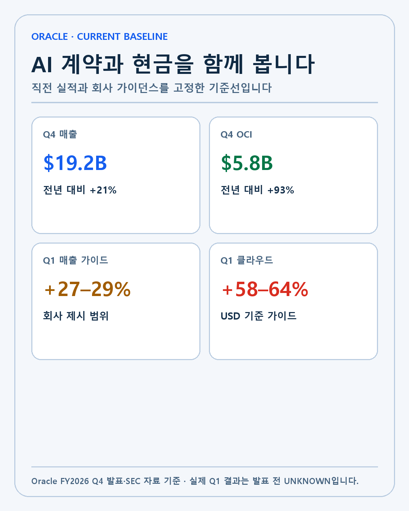
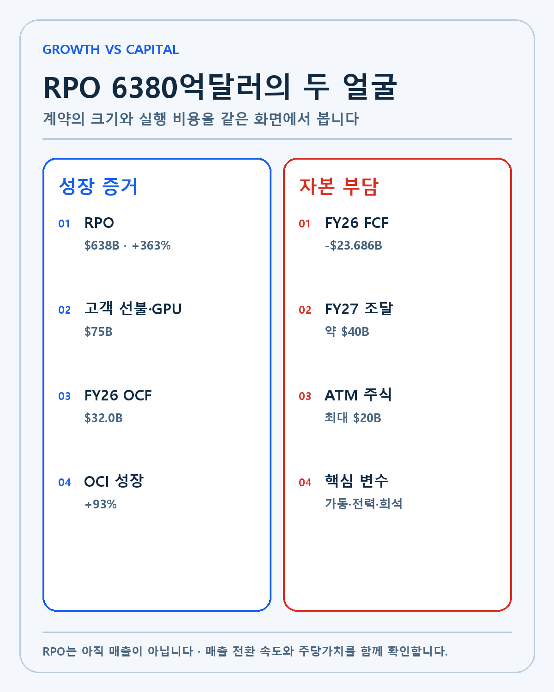
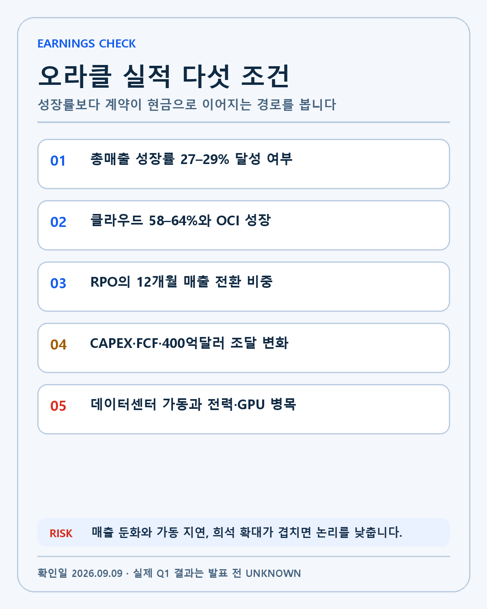

ORACLE · DEEP RESEARCH
Oracle FY2027 1분기 실적 프리뷰: RPO 6380억달러와 AI 데이터센터의 현금 시험
한국시간 9월 11일 오전 6시 Oracle 실적을 매출·OCI·RPO 전환·잉여현금흐름·자금조달의 다섯 조건으로 분석합니다.
오라클이 FY2027 1분기 실적을 미국 중부시간 9월 10일 오후 4시에 발표합니다. 한국시간으로는 9월 11일 금요일 오전 6시입니다. Oracle의 공식 일정에서 확인되는 것은 실적 공개일과 컨퍼런스콜 시각입니다. 아직 발표되지 않은 매출과 이익을 결과처럼 쓰지 않겠습니다.
오라클은 한동안 전통 데이터베이스 기업으로 불렸습니다. 지금 시장이 보는 오라클은 다릅니다. AI 모델을 학습하고 서비스하는 데이터센터를 빠르게 짓는 클라우드 인프라 기업이 됐습니다. 직전 분기 OCI 매출은 전년보다 93% 늘었고, 앞으로 인식할 계약을 뜻하는 RPO는 6380억달러까지 커졌습니다.
큰 계약은 분명 강한 수요의 증거입니다. 동시에 서버와 GPU, 전력, 토지에 먼저 돈을 써야 하는 사업입니다. FY2026 영업현금흐름은 320억달러였지만 잉여현금흐름은 236억8600만달러 적자였습니다. 이번 실적에서 저는 매출 성장만 보지 않겠습니다. 계약이 매출로 바뀌는 속도, 현금 부담, 주식 발행을 함께 보겠습니다.
실적 발표는 한국시간 9월 11일 오전 6시입니다
9월 미국 중부는 일광절약시간인 CDT를 적용합니다. CDT는 UTC-5, 한국은 UTC+9이므로 14시간 차이가 납니다. 미국 중부시간 9월 10일 오후 4시에 14시간을 더하면 한국시간 9월 11일 오전 6시입니다.
| 구분 | 미국 중부시간 | 한국시간 | 확인할 내용 |
|---|---|---|---|
| 실적 공개·콜 | 9월 10일 오후 4시 | 9월 11일 오전 6시 | Q1 매출·클라우드 성장·EPS |
| 발표 직후 | 장 마감 뒤 | 9월 11일 아침 | RPO·CAPEX·자금조달 설명 |
| 후속 확인 | 10-Q 공개 뒤 | 같은 날 이후 | 현금흐름·부채·주식수 |

실적 발표 전 시장 예상치는 참고만 하겠습니다. 회사가 직접 제시한 가이던스와 실제 결과를 먼저 비교하고, 컨퍼런스콜의 설명은 10-Q 숫자로 다시 확인하는 순서가 안전합니다.
기준선은 매출 192억달러와 OCI 58억달러입니다
Oracle FY2026 4분기 발표에 따르면 직전 분기 매출은 192억달러로 전년보다 21% 증가했습니다. 클라우드 매출은 99억달러로 47%, OCI 매출은 58억달러로 93% 늘었습니다. FY2026 연간 매출은 674억달러였습니다.
회사가 제시한 FY2027 1분기 기준은 더 높습니다. 총매출 성장률 27–29%, 클라우드 매출 성장률 58–64%, 비GAAP EPS 1.72–1.76달러입니다. 이 숫자를 넘었는지만 보는 방식은 부족합니다. 성장률이 높아진 이유가 기존 고객의 사용량 증가인지, 신규 AI 계약의 매출 인식인지, 환율 효과인지 나눠야 합니다.

저는 오라클을 보유하고 있지 않습니다. 그래도 이 실적을 보는 이유는 엔비디아와 브로드컴, 마이크론을 포함한 AI 인프라 수요를 읽을 수 있기 때문입니다. OCI가 빠르게 성장한다면 GPU뿐 아니라 네트워크, 메모리, 전력과 데이터센터 건설 수요가 연결됩니다. 반대로 계약은 커졌는데 인프라 공급이 늦어지면 매출 인식과 현금흐름이 엇갈릴 수 있습니다.
RPO 6380억달러는 매출이 아니라 약속입니다
RPO는 계약은 됐지만 아직 매출로 인식하지 않은 이행 의무입니다. FY2026 말 RPO는 6380억달러로 전년보다 363% 증가했고, 직전 분기보다 850억달러 늘었습니다. 숫자만 보면 오라클의 AI 데이터센터 수요가 폭발적으로 늘어난 것처럼 보입니다.
여기서 가장 중요한 구분이 있습니다. 6380억달러가 이번 분기에 들어오는 현금이나 매출은 아닙니다. 여러 해에 걸쳐 서비스를 제공해야 매출로 인식됩니다. 데이터센터가 계획대로 완공되고 고객이 계약한 용량을 사용해야 합니다. RPO가 커지는 속도와 실제 매출 전환 속도가 계속 벌어지면 실행 부담도 함께 커집니다.
대형 AI 계약 가운데 고객이 GPU 구매 대금을 선불로 지급하거나 직접 GPU를 제공한 부분은 750억달러입니다. 이는 오라클이 모든 하드웨어 비용을 혼자 부담하지 않는다는 뜻입니다. 하지만 전력, 건물, 냉각, 네트워크와 운영비까지 사라지는 것은 아닙니다. 이번 발표에서는 RPO 총액보다 향후 12개월 안에 인식될 비중과 데이터센터 가동 시점을 보겠습니다.
영업현금흐름 320억달러와 FCF 적자를 함께 봐야 합니다
Oracle FY2026 10-K에 따르면 연간 영업현금흐름은 320억달러로 전년보다 54% 늘었습니다. 본업에서 현금을 만드는 힘은 강했습니다. 그런데 잉여현금흐름은 236억8600만달러 적자였습니다. AI 데이터센터를 짓기 위한 자본지출이 영업현금흐름보다 더 컸기 때문입니다.
성장기업이 미래 수요를 위해 미리 투자하는 것은 나쁜 일이 아닙니다. 투자한 설비가 높은 가동률과 장기 계약으로 연결되면 현금흐름은 나중에 좋아질 수 있습니다. 문제는 매출 인식이 늦어지거나 고객의 수요가 바뀌는 경우입니다. 이때는 이자비용과 감가상각, 추가 조달 부담이 먼저 남습니다.
오라클은 FY2027에 약 400억달러를 부채와 주식으로 조달할 계획입니다. 이 가운데 200억달러는 ATM 방식의 주식 발행입니다. 사업의 절대 규모가 커져도 주식수가 많이 늘면 주당가치의 증가 속도는 달라집니다. 그래서 매출과 EPS만이 아니라 순부채, 이자비용, 희석주식수까지 같은 표에서 봐야 합니다.

이번 실적에서 확인할 다섯 조건입니다
- 총매출 성장률이 회사 가이던스 27–29%에 도달했는지 확인합니다.
- 클라우드 매출 성장률 58–64%와 OCI 성장률이 함께 유지되는지 봅니다.
- RPO 중 12개월 안에 매출로 인식될 금액과 신규 계약의 고객 집중도를 확인합니다.
- CAPEX와 잉여현금흐름, FY2027 400억달러 조달 계획의 변화 여부를 봅니다.
- 데이터센터 가동 지연과 GPU·전력 공급 제약이 다음 분기 가이던스에 반영됐는지 확인합니다.

강세 시나리오는 클라우드 성장률이 가이던스 상단을 넘고, RPO의 단기 매출 전환과 데이터센터 가동 일정이 빨라지는 경우입니다. CAPEX가 커도 고객 선불과 영업현금흐름으로 자금 부담이 낮아진다면 AI 인프라 확장 논리가 강해집니다.
기준 시나리오는 매출과 클라우드가 가이던스 범위 안에 들어오지만 잉여현금흐름 적자와 조달 계획이 그대로 이어지는 경우입니다. 이때는 높은 성장과 높은 자본 부담이 공존합니다. 실적 발표 직후의 주가보다 다음 두 분기의 RPO 전환과 현금흐름을 기다리겠습니다.
약세 시나리오는 매출 성장률이 가이던스 하단을 밑돌고, 데이터센터 지연으로 RPO의 매출 인식 시점이 뒤로 밀리는 경우입니다. CAPEX나 주식 발행 계획은 커지는데 다음 분기 가이던스가 낮아지면 주당가치의 위험이 커집니다.
제 포트폴리오에는 이렇게 연결합니다
엔비디아의 GPU 수요는 오라클 같은 클라우드 사업자가 실제 데이터센터를 가동할 때 매출로 이어집니다. 오라클의 RPO가 늘어나는 것은 좋은 선행 신호지만, GPU 주문과 설치, 고객 사용량 사이에는 시간이 필요합니다. 저는 오라클의 CAPEX와 가동 일정을 엔비디아 수요의 중간 증거로 보겠습니다.
브로드컴은 AI 네트워크와 맞춤형 가속기, 마이크론은 HBM과 서버 메모리에 연결됩니다. OCI 성장과 데이터센터 증설이 유지되면 이 기업들의 수요 기반도 넓어질 수 있습니다. 다만 오라클 한 곳의 계약을 산업 전체 수요로 확대해석하지 않겠습니다. Microsoft, Amazon, Google과 AI 네이티브 사업자의 투자도 같은 방향인지 확인해야 합니다.
저의 투자 기준은 기술, 해자, 창업자·경영진, 성장률, 현금흐름 순서입니다. 오라클은 기술과 고객 계약의 힘을 보여 줬습니다. 이번에는 그 기술과 계약이 얼마나 빠르게 매출과 현금으로 전환되는지 검증할 차례입니다. 성장률이 높다는 이유만으로 자본비용과 희석을 지우지 않겠습니다.
발표 뒤에는 이 순서로 다시 확인하겠습니다
첫째, 보도자료에서 실제 매출과 클라우드 성장률, EPS를 회사 가이던스와 비교합니다. 둘째, 컨퍼런스콜에서 RPO의 기간 구조와 데이터센터 가동 일정을 듣습니다. 셋째, 10-Q에서 자본지출, 영업현금흐름, 부채와 주식수를 확인합니다. 넷째, 다음 분기 가이던스가 공급 제약과 고객 수요를 어떻게 반영했는지 봅니다.
발표 직후 주가가 오르거나 내렸다는 사실과 그 원인은 분리하겠습니다. 실적, 금리, 시장 전체 흐름이 동시에 움직일 수 있습니다. 숫자를 확인한 뒤에도 원인을 모르면 UNKNOWN으로 남기는 편이 낫습니다.
이번 오라클 실적의 핵심은 ‘AI 계약이 크다’에서 끝나지 않습니다. 6380억달러 RPO가 매출로 바뀌는 속도, 320억달러 영업현금흐름과 큰 CAPEX의 균형, 400억달러 조달이 주당가치에 미치는 영향을 함께 봐야 합니다. 좋은 기술과 큰 수요가 좋은 투자 결과로 이어지려면 실행과 현금흐름이 가운데를 연결해야 합니다.
RPO를 읽을 때 생기는 세 가지 착시입니다
첫 번째 착시는 RPO를 매출과 같은 것으로 보는 것입니다. RPO는 계약상 앞으로 수행해야 할 의무의 합계입니다. 서비스가 제공되기 전에는 회계상 매출이 아닙니다. 계약 기간이 길수록 총액은 크게 보이지만 한 분기에 인식되는 비율은 낮을 수 있습니다. 그래서 RPO 총액만으로 다음 분기 매출을 역산하지 않겠습니다.
두 번째 착시는 계약이 늘면 현금 부담이 자동으로 줄어든다고 보는 것입니다. 고객 선불과 고객 제공 GPU는 분명 오라클의 초기 자금 부담을 낮춥니다. 그러나 데이터센터 토지, 전력 계약, 냉각, 네트워크와 운영 인력에는 별도의 돈이 들어갑니다. 계약의 자금 구조와 전체 CAPEX를 함께 봐야 합니다.
세 번째 착시는 장기 계약이면 위험이 사라진다고 보는 것입니다. 고객의 신용과 계약 조건, 건설 지연, 기술 세대 전환, 전력 확보가 실제 이행에 영향을 줍니다. 취소 가능성과 최소 사용 약정, 가격 조정 조건이 공개되지 않았다면 그 부분은 UNKNOWN입니다. 큰 계약은 기회와 실행 의무를 동시에 키웁니다.
데이터센터 투자 회수 구조를 나눠 봅니다
AI 데이터센터 투자는 계약, 건설, 장비 설치, 고객 가동, 매출 인식, 현금 회수 순서로 진행됩니다. 어느 한 단계가 늦어지면 뒤의 단계도 밀립니다. 오라클이 발표하는 RPO는 계약 단계에 가까운 지표이고, OCI 성장률은 이미 가동된 용량의 사용을 보여 줍니다. 잉여현금흐름은 이 모든 단계의 자금 부담이 결과로 나타난 지표입니다.
이번 분기에는 계약보다 가동을 확인하겠습니다. 신규 데이터센터가 계획대로 전력을 확보했는지, GPU와 네트워크가 설치됐는지, 고객이 언제부터 사용료를 지불하는지 알아야 합니다. 회사가 용량 확보보다 수요가 빠르다고 말한다면 공급 제약이 언제 풀리는지도 필요합니다.
RPO 증가율이 낮아져도 매출 전환이 빨라지면 반드시 나쁜 것은 아닙니다. 반대로 RPO가 또 크게 늘어도 가동 일정이 밀리고 자금조달이 커지면 주당가치에는 부담이 될 수 있습니다. 선행지표와 결과지표의 방향이 다를 때는 한 숫자로 결론 내리지 않겠습니다.
자금조달이 주당가치에 닿는 경로입니다
부채 조달은 기존 주주의 지분율을 바로 낮추지 않지만 이자비용과 만기 상환 의무를 만듭니다. 주식 발행은 이자 부담이 없지만 주식수를 늘립니다. 오라클의 계획은 두 방식을 함께 사용하는 구조입니다. 어느 방식이 더 낫다고 단정하기보다 조달비용보다 투자수익률이 높은지 봐야 합니다.
ATM 발행은 시장에서 일정 기간에 걸쳐 주식을 파는 방식입니다. 발표된 한도가 전부 즉시 발행됐다는 뜻은 아닙니다. 실제 발행 주식수와 평균 발행가격은 이후 SEC 자료에서 확인해야 합니다. 저는 실적 발표에서 계획의 변경 여부를 듣고 10-Q에서 실제 집행분을 확인하겠습니다.
매출과 영업이익이 빠르게 늘면 늘어난 주식수를 흡수하고 주당이익을 키울 수 있습니다. 그러나 데이터센터의 감가상각과 이자비용이 먼저 증가하면 회계이익과 현금흐름의 개선 시점이 달라질 수 있습니다. 주당가치는 ‘회사가 커졌는가’보다 ‘한 주가 소유하는 현금창출력이 커졌는가’로 판단하겠습니다.
실적 발표 뒤 기록표입니다
| 항목 | 직전 기준 | Q1에서 기록할 값 | 논리가 약해지는 조건 |
|---|---|---|---|
| 총매출 성장률 | 회사 가이던스 27–29% | 실제 성장률 | 가이던스 하단 미달과 다음 분기 하향 |
| 클라우드 성장률 | 58–64% 가이던스 | 실제 성장률·OCI | OCI 감속과 공급 지연 동시 발생 |
| RPO | 6380억달러 | 총액·12개월 비중 | 단기 전환 정체·가동 지연 |
| 영업현금흐름 | FY2026 320억달러 | 분기·최근 12개월 | 성장 둔화 속 CAPEX 확대 |
| 잉여현금흐름 | FY2026 -236.86억달러 | 분기·최근 12개월 | 적자 확대와 조달 증가 |
| 조달 | FY2027 약 400억달러 계획 | 부채·주식 실제 집행 | 이자비용·희석이 매출보다 빠른 증가 |
이 표는 매수·매도 신호가 아닙니다. 발표 전 기준을 고정하고 발표 뒤 같은 항목을 비교하기 위한 기록 장치입니다. 숫자가 좋아도 논리가 약해질 수 있고, 단기 숫자가 약해도 건설 일정 때문에 매출 인식이 미뤄졌을 수 있습니다. 원인을 공식 자료에서 확인할 때까지 판단을 보류하겠습니다.
무엇이 확인되면 다음 글을 업데이트할 것인가
실적 보도자료가 나오면 총매출, 클라우드 매출, EPS와 다음 분기 가이던스를 먼저 업데이트합니다. 컨퍼런스콜에서는 RPO의 전환 시점, 데이터센터 전력과 GPU 확보, 고객 선불 구조를 확인합니다. 10-Q가 공개되면 CAPEX, 영업현금흐름, 부채, 이자비용과 희석주식수를 기록합니다.
공식 자료 사이에 숫자가 다르면 회계 기준과 기간부터 맞춥니다. GAAP과 비GAAP, 분기와 최근 12개월, 매출과 계약가치를 섞지 않습니다. 기사 제목이 강하더라도 원문에서 확인되지 않는 원인은 사실로 쓰지 않겠습니다.
실적 직후 하지 않을 판단도 정해 둡니다
시간외 주가만 보고 실적의 좋고 나쁨을 정하지 않겠습니다. 발표 직후에는 거래량이 적고, 헤드라인 숫자와 컨퍼런스콜의 설명이 아직 모두 반영되지 않을 수 있습니다. 먼저 회사 가이던스와 실제 결과를 같은 기준으로 맞춘 뒤 차이를 기록하겠습니다.
RPO가 늘었다는 이유만으로 모든 AI 인프라 기업의 수혜를 단정하지 않겠습니다. 계약 기간과 고객, 데이터센터 가동 일정이 공개돼야 엔비디아·브로드컴·마이크론으로 이어지는 주문의 시점을 추정할 수 있습니다. 확인되지 않은 공급사를 공식 고객처럼 쓰지 않겠습니다.
잉여현금흐름 적자 하나만 보고 성장 투자가 실패했다고 정하지도 않겠습니다. 자본지출이 어느 계약과 가동 계획에 연결됐는지, 영업현금흐름과 조달비용이 버틸 수 있는지 확인합니다. 반대로 매출 성장률이 높아도 주식수와 이자비용이 더 빨리 늘면 주당가치의 개선은 늦어질 수 있습니다.
이번 실적은 정답을 맞히는 행사가 아니라 투자 논리를 업데이트하는 자료입니다. 발표 전 기준, 실제 결과, 다음 분기 가이던스와 10-Q를 순서대로 남기겠습니다. 모르는 부분은 억지로 채우지 않고 UNKNOWN으로 표시하겠습니다.
이 글은 개인 투자 기록이며 특정 종목의 매수·매도를 권유하지 않습니다. 실적 발표 전 수치는 회사가 공개한 직전 실적과 가이던스이고, 실제 FY2027 1분기 결과는 발표 전까지 알 수 없습니다. 모든 투자 판단과 책임은 투자자 본인에게 있습니다.
작성 방법
2026년 9월 9일 기준 공식 자료와 공시를 우선하고 실제·회사 전망·시나리오·UNKNOWN을 분리했습니다.
개인 투자 기록이며 특정 종목의 매수·매도를 권유하지 않습니다.